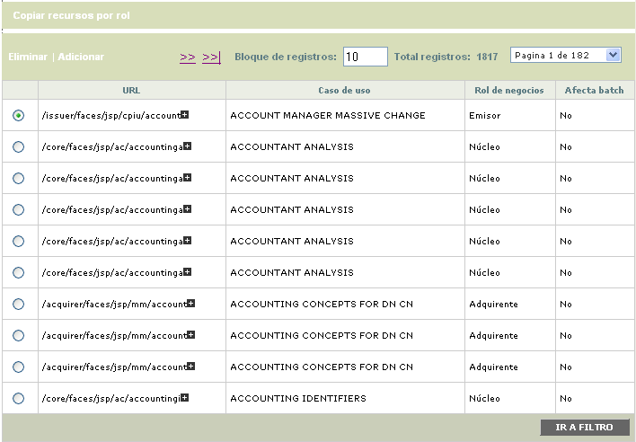
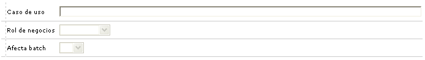
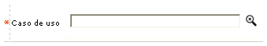
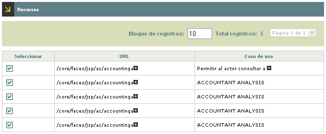
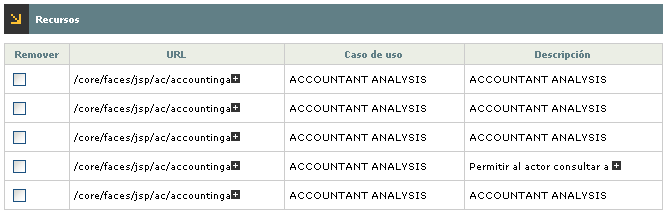
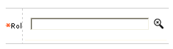

Asociación rol y recursos: A través de este formulario el usuario puede relacionar las diferentes URL de cada Caso de uso, a los Roles parametrizados en el formulario principal de esta misma opción.
El formulario contiene las opciones Eliminar, Adicionar y Copiar recursos por rol. Adicionalmente, cuenta con un botón en la parte superior que permite volver al formulario principal.

Filtro: Se pueden realizar consultas a través de las siguientes opciones:

Caso de uso |
Campo que acepta hasta 100 caracteres alfanuméricos. Se muestra sin lista de valores y acepta la búsqueda con el símbolo %. |
Rol de negocios |
Para poder filtrar por el Rol de negocios, el campo debe mostrar un combo con las siguientes opciones: Núcleo, Emisor, Adquirente, Débito, Servicios, y Cliente. |
Afecta batch |
El campo ' Afecta batch' muestra un combo con las siguientes opciones (Sí y No). |
Adicionar: Si el usuario invoca la opción Adicionar se despliega un wizard de tres pasos: Caso de uso, Recursos y Resumen.
Caso de uso : En este primer paso se ingresa el nombre del caso de uso del cual se quiere relacionar una o varias URL's nuevas al rol seleccionado en el primer formulario.

Caso de uso |
Este campo muestra lista de valores con todas las URL de los casos de uso ingresadas en este mismo caso. |
Recursos: En este formulario se muestran todas las URL relacionadas con el caso de uso seleccionado, tanto las que están asignadas actualmente al rol como las que no. Inicialmente se muestran todas seleccionadas con la posibilidad que escoger cuáles se retiran o se adicionan.

.Resumen: Este último formulario del wizard muestra las URL que hayan sido seleccionadas en el paso anterior. En él se pueden remover aquellas que no desean ser adicionadas.

.Copiar recursos por rol
Esta opción permite al usuario copiar al rol seleccionado, todas las URL que pertenezcan al elegido en la lista de valores del campo Rol.

.|
Rol |
Este campo muestra una lista de valores con todos los Roles creados en el sistema. A través del botón Copiar de, el sistema toma todas las URL del del rol elegido en la lista y las copia al seleccionado en el formulario principal de este caso. |